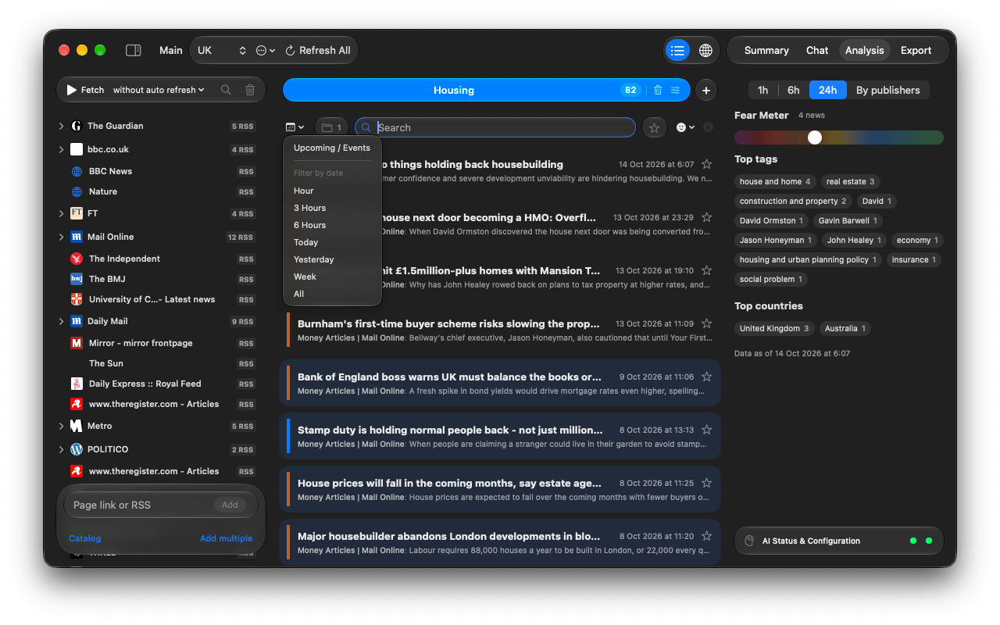
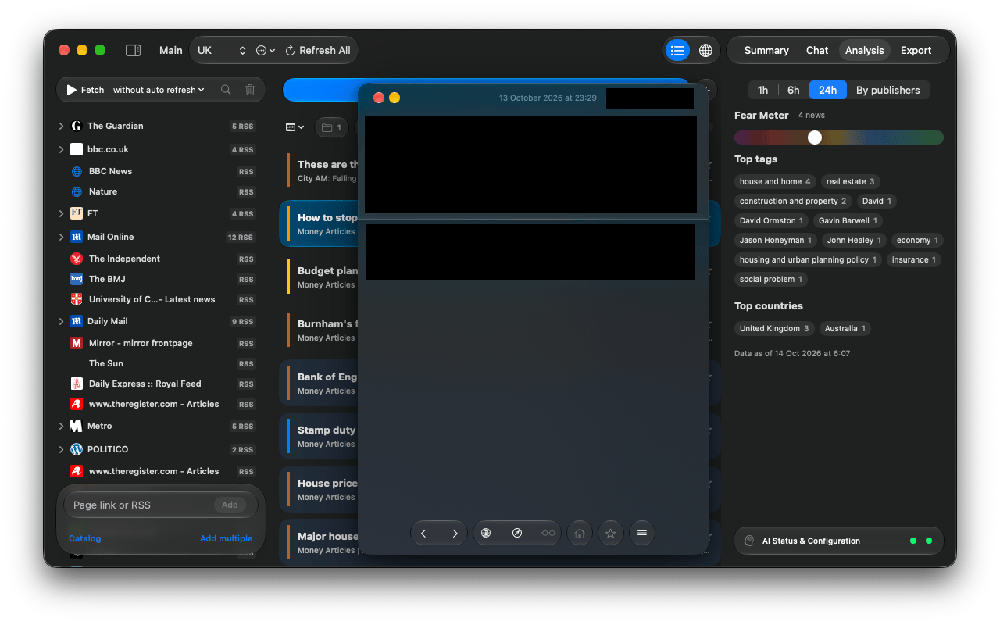

Handbook · Reading
Reading and filtering news
The filter bar, search syntax, story folders, the article window, translation and shortcuts.
The filter bar

- Calendar: only the last Hour, 3 Hours, 6 Hours, Today, Yesterday, Week; or Upcoming / Events.
- Folders: show only stories covered by several outlets.
- Source chips: appear when you choose Show Only This Source or click a publisher in Analysis.
- Search (⌘F): see the syntax below.
- Star: only your favorites.
- Sentiment: from Delightful to Catastrophic.
- ✕ clears every filter.
Search syntax
Search looks at titles and tags, ignores case and accents and matches inside words.
ukraine grain | both words (a space works like AND) |
ukraine, poland | either one (a comma works like OR) |
election -poll | without the word poll |
"interest rate" | the exact phrase |
Story folders
The same event reported by several outlets is grouped into one row with (+N). Tags are always in English even for foreign-language news, which is what lets stories from different countries meet in one folder. Right-click a folder and choose Summarize this Topic to see how outlets cover it. Settings → App Settings → News Folders chooses where folders are used.
The article window

- Previous article / Next article step through the list.
- The middle buttons switch between the live web page and the feed text, and show a clean Reader view when the page allows it.
- The … menu sets Render by default for this source: Auto, Feed text, Webpage or Reader view.
- Translate translates the text or the live page in place on your Mac; Show original undoes it.
- The star adds a favorite. Favorites survive every cleanup.
- Minimize an article to keep it in the toolbar while you read on.
Drag news out
Drag a row to a browser (link), Finder (a .webloc), a messenger (title, opening lines and link),
a text editor (full text) or Maps (a pin at the story's place). Dropping it on the Summary, Chat
or Export tab works too.
Keyboard
| ↑ ↓ | move through the list |
| → ← | open / close a story folder |
| Space | open or close the article |
| ⌘R | fetch news |
| ⌘F | search |
| ⌘0 | bring back the main window |